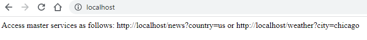
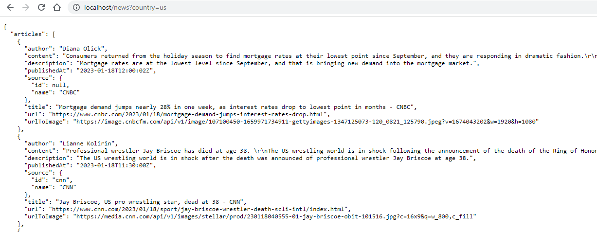
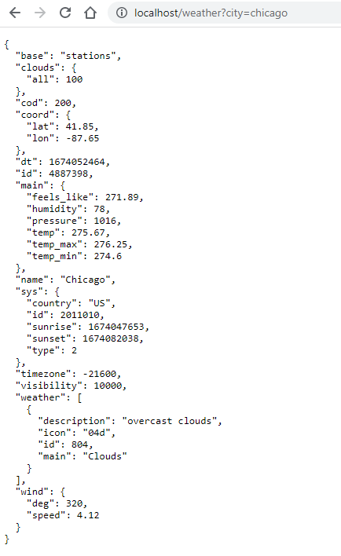

Create Master App
This is the main application. This will be configured to scale to 2 instances that are load balanced by Nginx. The app supports the following redirections :
- / : Return simple message on how to use this service 
- /news : Pass request to news service 
- /weather : Pass request to weather service 
Create master service
Create master_assistant.py and copy the following contents.
from flask import Flask, request
from flask_restful import Api
import requests
app = Flask(__name__)
api = Api(app)
@app.route('/')
def index():
res="Access master services as follows: http://localhost/news?country=us or http://localhost/weather?city=chicago"
return res
@app.route('/weather')
def weather():
city = request.args.get('city')
if city.isdigit():
res = "City name must be string e.g. 'Amsterdam, Berlin'"
return res
response = requests.get("http://weather:3002/weather?city="+ city)
return response.json()
@app.route('/news')
def news():
country_name = request.args.get('country')
if country_name.isdigit() or len(country_name) > 2 :
resp = "Country name must be string. Choose from below: \n\nThe 2-letter ISO 3166-1 code of the country you want to get headlines for.\nPossible options: ae ar at au be bg br ca ch cn co cu cz de eg fr gb gr hk hu id ie il in it jp kr lt lv ma mx my ng nl no nz ph pl pt ro rs ru sa se sg si sk th tr tw ua us ve za"
return resp
response = requests.get("http://news:3003/news?country="+ country_name)
return response.json()
if __name__ == '__main__':
app.run(host="0.0.0.0",port=3001,debug=True,threaded=True)
The key point to see is that the app runs on port 3001.
Create Dockerfile
Since this is the master app, we will use the standard Dockerfile. This will be auto-referenced in the docker-compose.yml file.
# use Python 3.11 image
FROM python:3.11-alpine
# install dependencies
COPY requirements.txt .
RUN pip install -r requirements.txt
EXPOSE 3001
COPY master_assistant.py .
# run the application
CMD ["python", "master_assistant.py"]
This will tell docker to:
- Use python base image 3.11-alpine
- Reference
requirements.txtin the image to install required software - Expose port 3001
- Copy
master_assistant.pyto the image - Start the master service